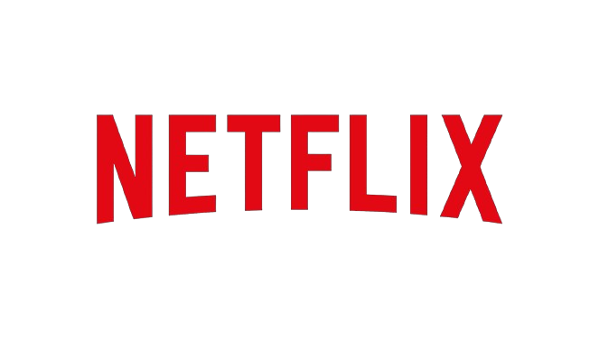

Infeliz em sua tentativa de casamento, Danny passa a vivenciar relacionamentos sem compromisso para driblar a carência. Assim, ele toca sua vida como cirurgião plástico bem-sucedido, tendo sua melhor amiga Katherine, mãe solteira de um casal, como fiel escudeira. Quando conhece a jovem Palmer e a paixão toma conta de ambos, ele inventa, para tentar conquistá-la, que é marido de Katherine, pai das crianças e que vai se separar.